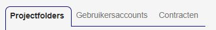
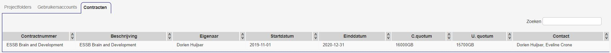

SURF Research Drive: General information
Note: this is a general introduction to Research Drive. For more specific instructions, to go How to use the Research Drive or visit the official Research Drive wiki.
What is SURF Research Drive?
Research Drive is a cloud environment offered by SURF and used by Erasmus University Rotterdam to store research data during the active research phase. It is not meant for long-term archiving, data publishing or data analysis!
In a way, Research Drive is similar to Google Drive, in that files are stored in the cloud, can be shared and collaboratively edited. The difference is that data are stored safely in the Netherlands (backed-up weekly) ánd that there is no personal storage, only team storage (storage per project) - in contrast to SURFdrive (500GB personal storage). This means that everyone who has access to a project folder can upload data up to the maximum storage assigned to that project. Data will therefore always be part of the project and remain accessible to the project members, even when end-users leave of permissions are changed.
There are also several integrations with other applications and environment (LISA cluster, Jupyter Hub, HPC cloud, OwnCloud, OnlyOffice which allows collaborative editing in the internet browser, etc.).
Roles and permissions
In Research Drive, each project gets a storage quotum and a data steward. The data steward gives rights to end-users. If permitted, end-users can upload data in the folders they received rights to.
Roles within Research Drive:
- Site administrator: manager of the entire (EUR-)instance > usually someone from SURF
- Dashboard administrator: manages all contracts, can add new contracts and assigns contract administrators > someone from EUR
- Contract administrator/owner (currently Dorien for the SYNC lab): manages a contract that has a specific amount of storage available to divide over the projects under the contract:
- can create project folders including a storage quotuum and data steward for each project
- does not automatically have access to the created projects
- Data steward: responsible for specific project(s):
- gives rights to members or groups by permissions on folder level
- can invite new members
- can always see all project contents
- Member: normal end-user, anyone can add new members by sending invitations (but data stewards have to give them permissions)
Sharing files and folders
Data stewards can give the following permissions to users:
- Read-only: keep in mind that copying data to a local machine is always possible
- Write:
- Create: create and add new items and rename existing folders
- Change: upload and replace existing items in the folder
- Delete: delete existingg items in the folder
- Share: can re-share the item or a child item. If users have this right, they can set (perhaps broader) permissions for other users. This is not recommended, since you can quickly lose overview of who has access to which data. This way, the data steward remains in control of the data.
Folders and/or files can be shared with:
- Existing users (search for the email address or user name)
- A custom group (Settings > Custom groups): you can add users to a custom group and then set permissions for the entire group. All users in that group then have the same permissions.
- Others cannot see who is in the group, but
- Anyone can find the group name, so make a well-defined, distinguishing group name, e.g., "SYNC_Brainlinks_edit"
- A SURFdrive user: if someone can use SURFdrive via their institution, they don't need a new Research Drive account. You can simply share the files or folders with their federated cloud ID, click here) for how to do this.
- A new user: Dashboard > New user. Afterwards the user has an account, the data stewards needs to add the new user to the relevant folder. The new user can choose 2 types of accounts:
- Organization: if the user has a SURFconext account (e.g., because they work at a different university), this option is recommended
- Local: if the user does not have a SURFconext account, choose this option
- Non users: public link: everyone with a link gets the specified permissions. You can set an expiry date, password and permissions. A great option here is the drop file function: partners can put files in the project folder but cannot see or download the contents of the other partners (“write-only”).
Important notes on sharing
- Permissions are inherited from parent folders, unless they are specifically changed (e.g., during re-sharing): giving access to a folder means giving access to all subfolders as well!
- Reversely, a user with whom subfolders are shared cannot see the parent folders. Therefore, make understandable folder names if you plan to share subfolders (e.g., not "Students", but "Brainlinks_Students")
- Specific subfolder permissions overrule higher-level permissions!
- A share name can be renamed individually. This is invisible to original sharer (data steward). However, the contents of the folder remain the same and visible to all.
Interface
When you log into Research Drive, you will automatically see an overview of Projects / folders of which you are data steward or member. These files can always be accessed in the Menu in the upper left corner, as are Applications and the Dashboard:

Dashboard
The Dashboard is accessible to anyone, but only relevant data will be shown.
- Users can only invite new users. Under "User accounts", click "Invite user". For each user, you can view their Project membership, contract details, storage overview and service overview (available apps can be added here too). After account removal, the account will exist for 30 days.

- Data stewards can also invite new users and additionally have an overview of project folders and user accounts

- Contract administrators can also invite new users and have overview of project folders, but they can also add new and edit existing project folders and see the contract details.



Settings
Settings can be found on the top right of the screen:

The most important settings are:
- General: here, you can find your account details, federated cloud ID and links to external apps
- Security: contains, among others, your saved end-to-end encryption keys (if any) and Webdav passwords
- Custom groups: here, you can make new custom groups and add users to them. Note that every EUR instance Research Drive user can find this group, so aptly name them!
Version control
- New versions of single files are automatically stored: any version older than two weeks will be removed
- When you are working on the same file simultaneously and not in your internet browser (which supports collaborative editing), the last saved file will be the version stored. However, you can restore previous versions via the Versions tab.
- Deleted files are moved to the trash bin. They will be removed after 30 days and can be restored from here during this period. Retention periods can be configured.
- To prevent syncing issues, make a copy first or work on local files (only copy what you need)
Further reading
- Official Research Drive wiki: https://wiki.surfnet.nl/display/RDRIVE
- Slides for end-users: https://surfdrive.surf.nl/files/index.php/s/7HBbzSxKbK1c5cr
- Hands-on exercises for end-users: https://surfdrive.surf.nl/files/index.php/s/7LmzSGz9Dgd1F3t
- Slides for data stewards: https://surfdrive.surf.nl/files/index.php/s/bVsuqPUKYttBmjB
- Link for logging on in the demo environment: https://demo.data.surfsara.nl/index.php/login